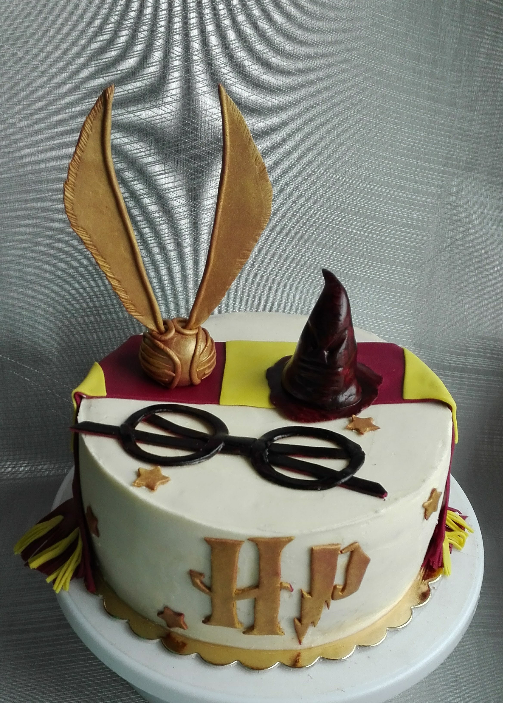

O mnie
Mam na imię się Sylwia i witam Cię
serdecznie na mojej pierwszej stronie
internetowej! :)
Przedstawia ona moje efekty nauki podczas kursu Frontend Develeopera oraz pozwolę się
trochę przedstawić.
Mam 28 lat, pracuję w Geodezji. Studiowałam w Rzeszowie na kierunku Geoinformatyka
gdzie poznałam podstawowe zagadnienia z programowania. Jednak po tak długiej przerwie w nauce
stwierdzam, że tamten
materiał był kroplą w morzu tego tematu niemożliwych!
Jednym z moich zainteresowań jest pieczenie i
tworzenie tortów w stylu
angielskim, które łączy się z miłocią do malowania i rzeźbienia.
Lubię śpewać gdy nikt nie
słyszy
oraz tańczyćgdy nikt nie widzi. Najświeższym zainteresowaniem okazuje się programowanie.
Rozpoczęłam
kurs YouCode i mimo mega napiętego grafiku, codziennie próbuję uszczknąć choć chwilkę, by
poduczyć się i
dogonić za resztą kursantów z materiałem.Staram się dać z siebie wszystko by rozwinąć się w tej
kategorii, choć efekty najleiej będą mówić same
za siebie. :)
Zapraszam do przeglądania mojej stronki:)
Sylwia :)

Trochę muzyki
Ogólnie nie mam jakichś sztywnych upodobań muzycznych, bo doceniam pracę muzyków i z każdej usłyszanej piosenki staram sie wyciagnąć morał czy przesłanie. Jednak najbliższy mojemu sercu jest Rock i Metal. :) Dla mnie najważniejsza w muzyce jest elastyczność i otwartość na treść. Oprawa muzyczna nadaje przesłaniu wyjątkowy kształt i pozwala spojrzeć na temat z różnych perspektyw.
| Wykonawca | Tytuł | Tytuł | |
|---|---|---|---|
| Linkin Park | "Numb" "What i Have Done" | ||
| Courtesy Call | "Thousand Foot Cunch" | "Numb" "What i Have Done" | |
| Sia | "Courage to change" | "Numb" "What i Have Done" | |
Coś o pieczeniu
Jednym z moich hobby jest pieczenie i tworzenie projektów tortów w
stylu
angielskim.
Sugarcrafting poznałam parę lat temu. Każdy tort dopasowany jest indywidualnie do okazji i zainteresowań
jubilata. Dekoracja opowiada o tym, kim jest, czym się interesuje lub gdzie pracuje. W humorystyczny
sposób przedstawia osobę solenizanta lub jej otoczenie. Metoda sugarcraftingu doskonale
sprawdza się podczas tworzenia tortów dla najmłodszych. Bajkowe motywy wprawiają w zachwyt, a ulubione
postaci są niczym wyjęte z bajki.Możliwości jest niezliczenie wiele, a jedyne, co może nas
ograniczać, to nasza wyobraźnia.

Przygotowanie tortu:
- Przygtować składniki.
- Zrobić biszkopt według przepisu.
- Przełożyć kremem i dobrze wystudzić.
- Otynkwać oraz udekorować według życzeń.
Rodzaje tortów:
- tort klasyczny:
- zdobiony owocami, topperami lub kremem
- bez dodatku masy cukrowej
- boki tortu zdobione drippem, posypkami, czekoladą lub glazurą
- tort w stylu angielskim:
- dekoracje z masy cukrowej
- powleczony masą cukrową
- forma standardowa lub 3D